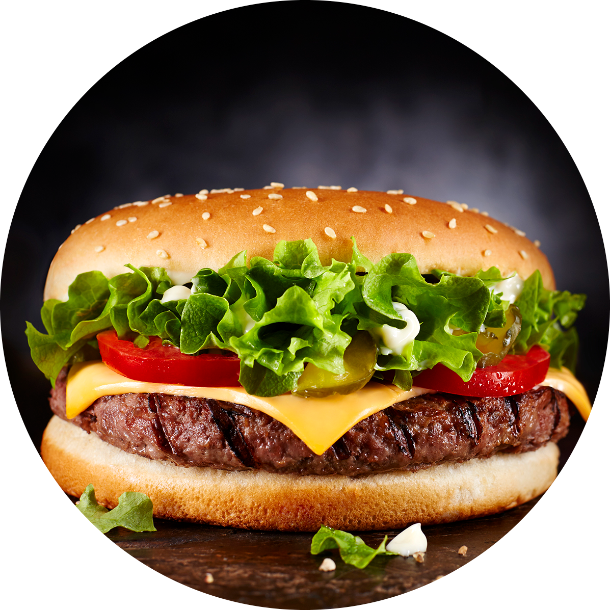
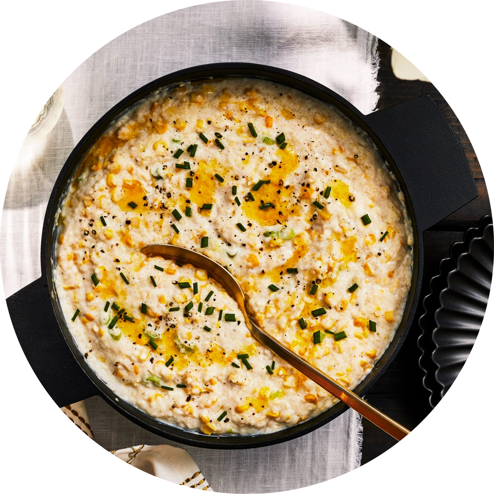
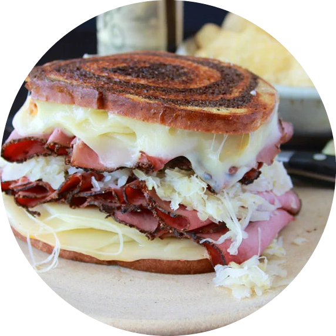

| American cuisine is the cooking style and traditional dishes prepared in the United States. It has been significantly influenced by European, indigenous Native Americans, African Americans, Asians, Pacific Islanders, and many other cultures and traditions. Principal influences on American cuisine are Native American, British, French, German, Spanish, and Italian cuisines. |
|  |
HAMBURGERA hamburger, or simply burger, is a food consisting of fillings—usually a patty of ground meat, typically beef—placed inside a sliced bun or bread roll. Hamburgers are often served with cheese, lettuce, tomato, onion, pickles, bacon, or chilis; condiments such as ketchup, mustard, mayonnaise, relish, or a "special sauce", often a variation of Thousand Island dressing; and are frequently placed on sesame seed buns. A hamburger topped with cheese is called a cheeseburger. |
|  |
GRITSGrits are known as a quintessential dish in Southern cuisine that has gone from a humble breakfast or side dish to the base for a tasty shrimp entree featured on restaurant menus. Grits actually have a much longer history; the word "grits" refers to any coarsely ground grain and was eaten by the Indigenous peoples. Today, grits are made with either hominy or stone-ground corn and are boiled and then usually combined with butter and milk. |
|  |
REUBEN SANDWICHThe Reuben sandwich is a North American grilled sandwich composed of corned beef, Swiss cheese, sauerkraut, and Thousand Island dressing or Russian dressing, grilled between slices of rye bread. It is associated with kosher-style delicatessens, but is not kosher because it combines meat and cheese. |
|
MEATLOAFMeatloaf is a dish of ground meat that has been combined with other ingredients and formed into the shape of a loaf, then baked or smoked. The final shape is either hand-formed on a baking tray, or pan-formed by cooking it in a loaf pan. It is usually made with ground beef, although ground lamb, pork, veal, venison, poultry, and seafood are also used, sometimes in combination. Vegetarian adaptations of meatloaf may use imitation meat or pulses. The cooked meatloaf can be sliced like a loaf of bread to make individual portions. It can easily become dry; therefore, various techniques exist to keep the dish moist, like mixing in bread crumbs and egg, covering it with sauce, wrapping it, or using moisture-enhancing ingredients in the mixture, such as filling it with fatty meats, rich cheeses, or vegetables. |